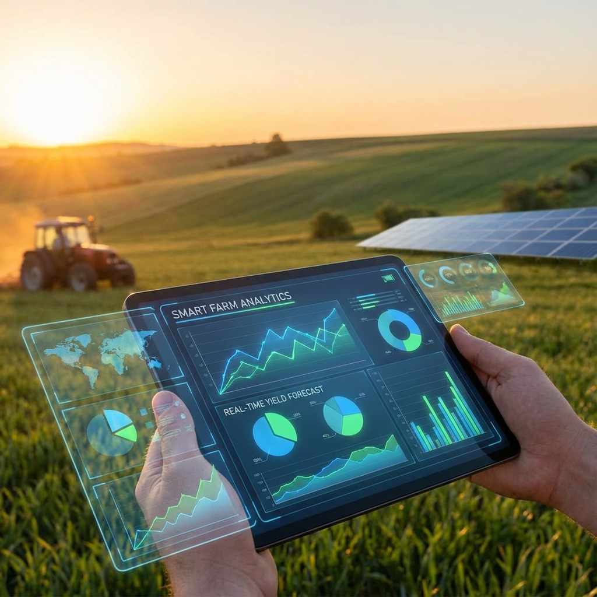

Our Approach: IoT + AI + Data
We design solutions from the field backward: starting with on-ground challenges, testing with real users, and refining through continuous feedback. By combining edge AI, sensor networks, and simple communication channels, we built a system that works offline, survives rough conditions, and delivers the information that matters most, when it matters.

IoT
Deploying sensor networks for soil, moisture, and environmental data collection.

AI
Using machine learning models to optimize crop management and predict outcomes.

Data
Transforming agricultural data into actionable insights for farmers and policymakers.